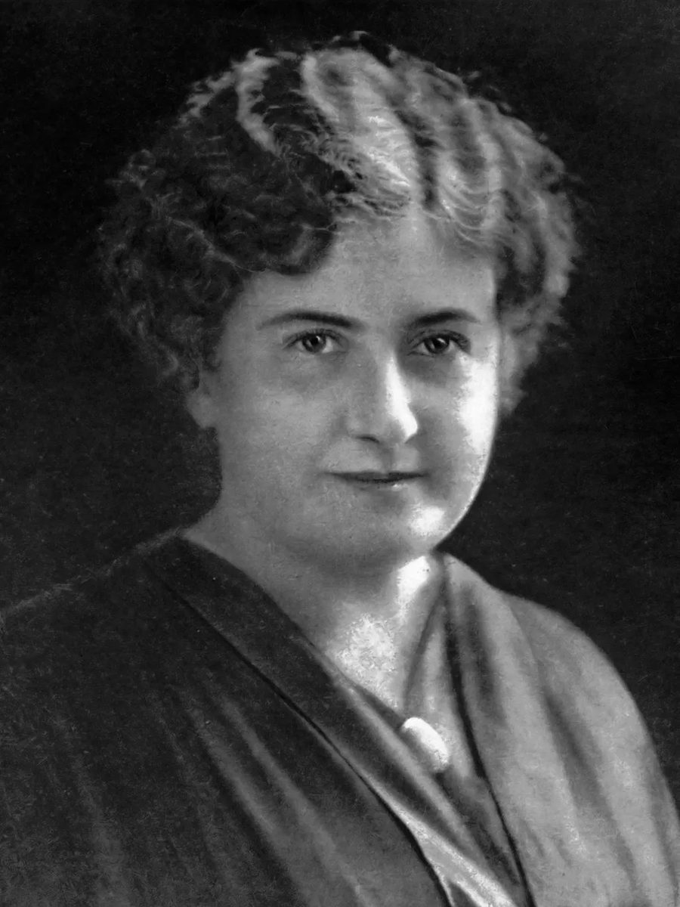
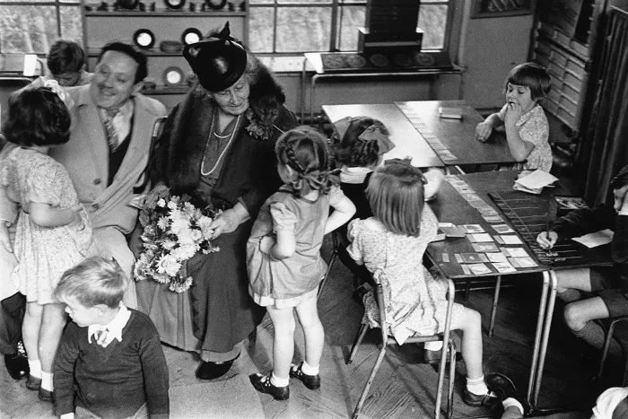

Início › Maria Montessori
Biografia
Maria Montessori
Cientista · Reformadora · Feminista · Pacifista · Visionária. Maria Montessori (1870–1952) foi médica, educadora e filósofa, reconhecida internacionalmente por criar o método que leva seu nome.

Maria Montessori nasceu em Chiaravalle, na Itália, e foi uma das primeiras mulheres a se formar em Medicina pela Universidade de Roma, em 1896. Sua formação científica e seu interesse pelas questões sociais foram fundamentais para o desenvolvimento de suas ideias pedagógicas.
Da medicina à educação
Montessori começou sua carreira profissional como médica, trabalhando com crianças com deficiência intelectual — experiência que despertou seu interesse pela educação. Ela observou que muitas dessas crianças não eram tratadas de forma adequada e que poderiam aprender de maneira muito mais efetiva se tivessem o ambiente certo e a abordagem educacional correta. Isso a levou a repensar os métodos educacionais tradicionais e a estudar a obra de Jean Itard e Édouard Séguin.
Essa forma de observar as crianças a levou a desenvolver o método cientificamente: sempre formulando uma hipótese, colocando-a em prática e, então, observando as crianças. Todo o seu processo considerava, de forma consistente, a criança em um ambiente livre, com atividades que despertavam interesse genuíno.
A primeira Casa dei Bambini
Sua trajetória na educação começou oficialmente em 1907, quando foi convidada a trabalhar com crianças de um bairro pobre de Roma, onde fundou a primeira Casa dei Bambini (Casa das Crianças). Ali, por meio da observação ativa da vida das crianças, começou a desenvolver os fundamentos do que viria a ser o seu Método.
Maria Montessori acreditava que nenhum ser humano é educado por outra pessoa, mas por si mesmo.
As ideias centrais do método
- Respeito pela criança: a criança é participante ativa da aprendizagem, capaz de fazer escolhas e aprender no próprio ritmo — com um guia interior natural que conduz o seu desenvolvimento.
- Ambiente preparado: a sala é organizada e projetada para que a criança explore livremente, com materiais que promovem a aprendizagem prática e a autonomia.
- Aprendizagem autodirigida: a criança tem liberdade para escolher suas atividades e explorar o mundo à sua volta, desenvolvendo habilidades cognitivas, sociais e motoras.
- O papel do educador: o professor é um guia ou facilitador, não um instrutor tradicional. A palavra-chave é observação — sempre ativa, sempre buscando compreender as necessidades da criança. Cada interação é uma oportunidade pedagógica.
Educação para todos
A filosofia Montessori inclui a crença na importância da educação para todos. Montessori defendia a educação inclusiva: acreditava que todas as crianças, independentemente de sua origem ou de suas capacidades, têm o potencial de aprender e se desenvolver de forma significativa. Essas ideias eram completamente contrárias às concepções predominantes da época e tiveram um impacto profundo sobre a maneira como se compreende o desenvolvimento infantil.
Feminista e pacifista
Montessori também defendia que todas as mulheres deveriam ser educadas e empoderadas, pois isso era crucial para o desenvolvimento da sociedade como um todo. Engajou-se em atividades feministas durante sua formação em medicina e sempre defendeu as mulheres pobres, que sofriam sob o governo italiano dominado por homens naquele tempo. Ela escreveu:
[A mulher] trabalha como um homem, e suas responsabilidades domésticas não deixam de existir. Em vez do descanso que o marido tem depois do trabalho, as tarefas da casa a esperam, geralmente com uma criança junto ao coração ou nos braços.
(apud Povell, pp. 37–8)
Foi contemporânea do movimento da Escola Nova, do fim do século XIX e início do XX, ao lado de figuras como John Dewey, Ovide Decroly, Célestin Freinet e Adolphe Ferrière. Buscando um desenvolvimento centrado na criança e voltado a uma sociedade em paz, Montessori acabou se distanciando do movimento por falta de alinhamento com suas ideias.
Evitar a guerra é obra dos políticos; estabelecer a paz é obra da educação.
Montessori, Maria. Educação e Paz (p. 24).

Legado
Montessori passou os últimos anos de sua vida viajando pelo mundo, difundindo suas ideias e formando educadores, enquanto suas escolas e métodos se espalhavam por muitos países. Escreveu vários livros e realizou conferências sobre suas descobertas e teorias.
Maria Montessori faleceu em 1952, mas seu legado permanece vivo. O Método Montessori continua sendo uma das abordagens educacionais mais populares e eficazes, adotado por escolas no mundo inteiro e ajudando milhões de crianças a se tornarem aprendizes independentes e confiantes. Sua obra segue relevante porque coloca a criança no centro do processo educacional — respeitando suas necessidades e promovendo um desenvolvimento integral, não apenas acadêmico, mas também emocional e social.
Linha do tempo
- 1870
Nasce em Chiaravalle, Itália. - 1896
Forma-se em Medicina pela Universidade de Roma — uma das primeiras médicas da Itália. - 1907
Funda a primeira Casa dei Bambini, em um bairro pobre de Roma. - A partir de 1909
Publica sua obra e forma educadores; o método se espalha pelo mundo. - 1952
Falece, deixando um legado global duradouro.
Referências
- Lillard, Paula Polk. Método Montessori: uma introdução para pais e professores (edição em português).
- Seldin, Tim; Epstein, Paul (PhD). The Montessori Way.
Os princípios por trás do método
Explore os fundamentos que orientam a filosofia Montessori na prática.